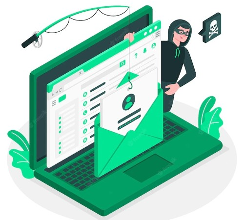
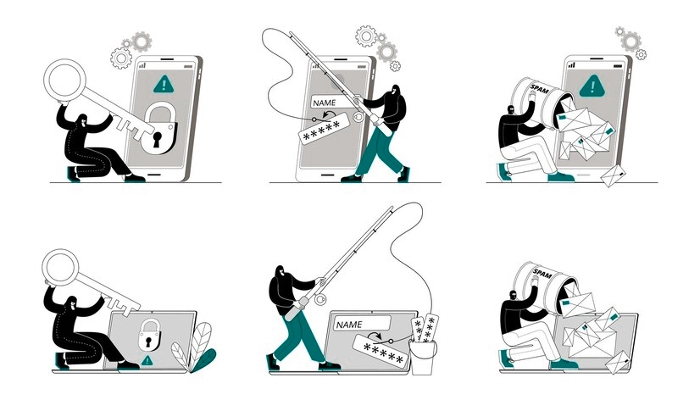

Phishing attacks are nothing new, but the number of data breaches and compromised accounts has increased dramatically over the past few years. Organizations need to update their data security procedures to prevent phishing attacks, which try to trick users into giving their personal and financial information to criminals.
Email or hyperlink scammer fraud is a type of cybercrime that employs phony emails or web links or email to bill somebody is known as phishing. If the victim falls for the trick, they will download a risky attachment or click on a malicious link, making private information vulnerable.
In a successful phishing attack, a trustworthy entity may be used as a model. Many perpetrators will camouflage themselves as real or pretend to be real. It's possible that even though another human being might know that you receive promotional messages from the business in question, you might not be aware that something is amiss. Still, you might receive a message from the company that could have the appearance of a notification.

The best way to protect a company's IT infrastructure from phishing attacks is to carry out employee security training that is practical and effective.
There are several different products for thwarting cybercriminals from thieving attempts. For instance, programs used to transmit messages to the target group are used to collect metrics and report them to business management teams. Some businesses also employ heuristic methods to filter spam.
In addition to endeavoring to block phishing emails, different companies also attempt to protect their computers and networks via investments in cyber liability insurance.
Firms and individuals can use a number of tactics to steer clear of a touch of phishing attacks.
Disregarding links or attachments in messages ought to be avoided unless the sender is known and the email is expected. For example, click rate statistics on messages sent by verification services should not be opened.
IT specialists can return to a system recalling independent of malware during a cyber-attack by employing system backups.
Users must ensure that HTTPS (and not HTTP without the S ) is enabled when transmitting sensitive data online. This ensures that the transmission is being secured.
Other phishers frequently utilize pop-up events as a means to collect sensitive user information. Unless the user is utilizing a totally reliable website, it is best not to reveal any sensitive information through pop-up interfaces. Most browsers let users select which pop-ups users can approve and reject for reliable websites.
Keeping workers aware of the latest phishing scams and techniques being used in order to prevent them is vital. Outsourcing this task to a specialist can be considered, especially when companies move toward a web-based work environment.
If ever a firewall blocks a malicious program that may come in via a phishing email, all users on the company network are effectively shielded.

Anti-spam software filters out emails from known phishers and other cybercriminals to filter them out from employees' inboxes, thereby preventing them from being unintentionally deemed legitimate.
In theory, firms appear to be aware of the benefits of forbidding the use of out-of-date antivirus products. However, this may be challenging following the virus crisis along with the increasing popularity of Bring Your Own Device (BYOD) practices. The solution is to present your IT team with technology that enforces valid assorted compliance.
Spyware detection systems may safeguard computer systems from attacks by cyberspies by disabling spyware on the systems of workers that could become the target of spear phishing attacks.
DNS bug farming is a way to make phishing attacks that utilize DNS poisoning. These attacks do not show up as pop-up windows or carefully-crafted emails; they are designed using poisoning a person's local DNS server. When the domain name is successfully attacked the malicious copy is opened when attempting to access the original site. Administrators can block such attempts by locking down DNS servers under their control using security tools.
In Conclusion, Phishing emails are one of the biggest threats to businesses today. It is one of the most common forms of cyber attacks. Phishing involves the creation and distribution of email messages that appear to be from a trusted source, implying that the recipient must take immediate action. Although every email received should be thoroughly examined before deleting, it is important to be extremely cautious about opening any links or attachments.